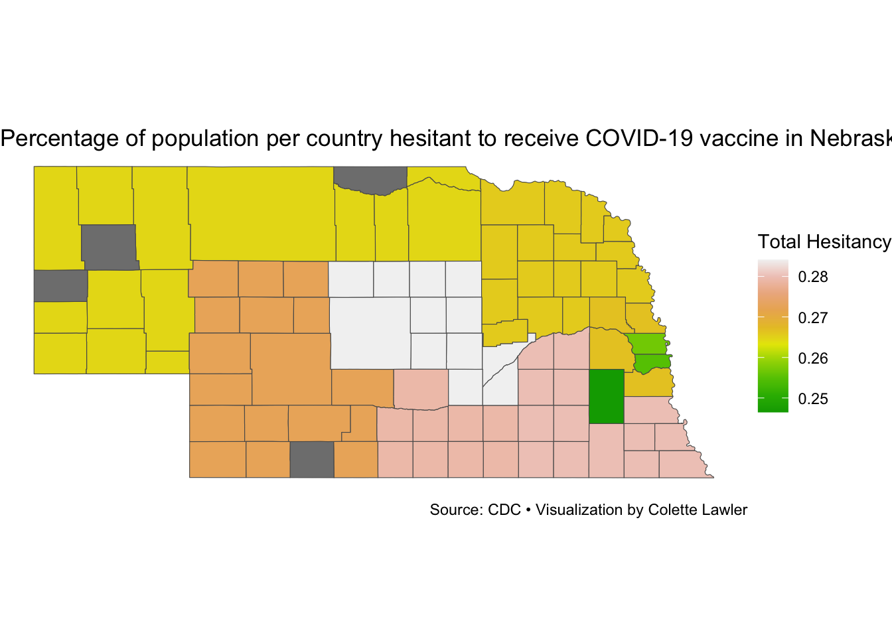

ggplot() +geom_sf(data = nebraska_shapes,aes(fill = total_hesitancy)) +scale_fill_gradientn(name ="Total Hesitancy", colors =terrain.colors(10)) +labs(fill =NULL,title ="Percentage of population per country hesitant to receive COVID-19 vaccine in Nebraska",caption ="Source: CDC • Visualization by Colette Lawler") +theme_void() +theme(legend.position ="right")

This map shows percentages of vaccine hesitancy per county in Nebraska. There are a few counties with N/A data, but for the most part, there’s medium hesitancy in general. Honestly, from living in Nebraska and experiencing the political climate of the state, it’s a lot less than I expected. In Eastern Nebraska (the green counties represent Omaha and Lincoln), it doesn’t surprise me that there’s less hesitancy, since those counties tend to lean more Democratic than rural counties, which heavily favor Republicans (many of whom, especially in Nebraska, were opposed to vaccine and mask mandates).
Source Code
---title: "solo.project"editor: visual---```{r}library(sf)county_shapes <-read_sf("/Users/colettelawler/Downloads/cb_2023_us_county_500k")head(county_shapes)``````{r}library(tidyverse) vaccine_data <-read_csv("/Users/colettelawler/Downloads/Vaccine_Hesitancy_for_COVID-19__County_and_local_estimates_20250402.csv")``````{r}head(vaccine_data)``````{r}vaccine_clean <-vaccine_data |>filter(State =="NEBRASKA") |>separate(`County Name`, c("name", "county")) ``````{r}vaccine_renamed <-vaccine_clean |>rename(estimated_hesitant ="Estimated hesitant") |>rename(estimated_hesitant_or_unsure ="Estimated hesitant or unsure") |>rename(estimated_strongly_hesitant ="Estimated strongly hesitant") |>mutate(total_hesitancy = estimated_hesitant_or_unsure + estimated_strongly_hesitant + estimated_hesitant) |>filter(State =="NEBRASKA") |>select(name, total_hesitancy)head(vaccine_renamed)``````{r}nebraska_shapes <- county_shapes |>filter(STATE_NAME =="Nebraska")head(nebraska_shapes)nebraska_shapes <- nebraska_shapes |>full_join(vaccine_renamed, join_by(NAME == name))``````{r}ggplot() +geom_sf(data = nebraska_shapes,aes(fill = total_hesitancy)) +scale_fill_gradientn(name ="Total Hesitancy", colors =terrain.colors(10)) +labs(fill =NULL,title ="Percentage of population per country hesitant to receive COVID-19 vaccine in Nebraska",caption ="Source: CDC • Visualization by Colette Lawler") +theme_void() +theme(legend.position ="right")```This map shows percentages of vaccine hesitancy per county in Nebraska.There are a few counties with N/A data, but for the most part, there's medium hesitancy in general.Honestly, from living in Nebraska and experiencing the political climate of the state, it's a lot less than I expected.In Eastern Nebraska (the green counties represent Omaha and Lincoln), it doesn't surprise me that there's less hesitancy, since those counties tend to lean more Democratic than rural counties, which heavily favor Republicans (many of whom, especially in Nebraska, were opposed to vaccine and mask mandates).